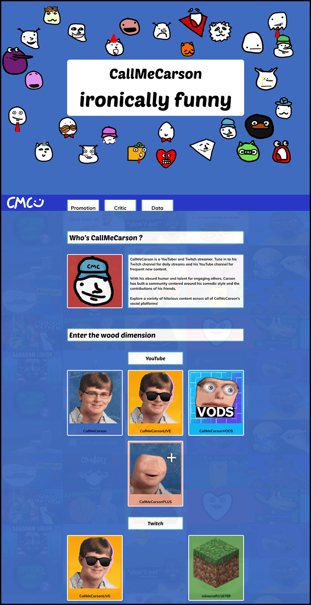
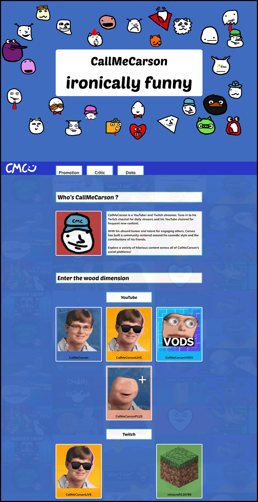
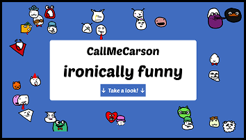

Project Janus - CallMeCarson
2024, lead designer and lead developer
The purpose of this school project was to create a website about an influencer. To make a page promoting him, then one talking about the influencer controversies and problems, and a page displaying his data.
Moodboard
For the moodboard, I decided to use assets of CallMeCarson’s YouTube channels, his logos and banners. Colors comes from the YouTube assets and his official website. The logo is his official one. For the fonts, I used Poetsen One (which is the one he uses to subtitle his videos), and Muli (which is his website’s font).
Assets

I used a compilation of his YouTube thumbnails to use as a background image on the website and break the plain blue background.
For the buttons linking to his socials, I decided for it to be mainly designed around his socials’ logos, as this is the most recognizable part of his channel, and a part of his personality. So each button contains the logo and the name he uses on this account. Hovering on the button will display a description on what he does there.
Iterations

 

From the first draft, I decided to clean the area. On a designer side, the plain white section on a plain blue background was ugly. I decided to separate everything in different sections, so the user could breathe between them. It is also more easily readable because each sections stands out more.
But the buttons also felt to white, so I decided to color them with the primary color of the logo it is tied with.
Final Design

Project Dataplay - McDollars
2025, fetch and JavaScript developer
Project Dataplay was a school project centered around the use of data to create an interactive experience. McDollars is centered around the Big Mac Index, the cost of its ingredients, and whether it relates to global inflation.
Moodboards

The first moodboard is targeted towards our art direction. We wanted something that feels retro and that reminds people of McDonald’s and money. We used the Burger King font which gives a retro 1970’s vibe. And we used some assets to create a really good retro art direction.
The second moodboard was for the website. We had to make a choice, either inspiring us from fast foods website. Or inspiring us from the ordering terminal’s interfaces.
Designs


We decided to present the website in two parts. The first part present the project and the website, giving context for users. When scrolling, it also show graphs of the raw data we collected.
The second part appears after clicking the button in the first part. On the left, the would be a listing of dates, listed as to look like the left side of an ordering terminal. On the right side, there is the ticket, which show the data for the selected year, and a visual assistance (how many Big Mac of the selected year would you need to buy today’s Big Mac).
Final Design